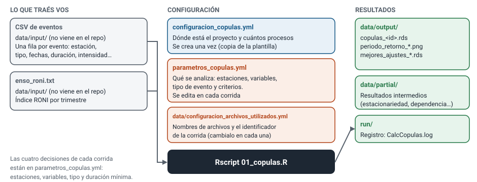

Guía de uso
Cómo configurar y correr una cópula para una o varias estaciones, sin necesidad de entender el detalle del método. Alcanza con saber editar archivos de texto y copiar un comando. Si más adelante querés saber qué hace el pipeline por dentro, está el manual técnico.
Qué hace y qué necesitás
Dado un listado de eventos extremos (olas de calor, olas de frío, períodos cálidos o fríos, sequías) con su duración e intensidad, el pipeline estima cada cuántos años se espera un evento de determinada combinación de duración e intensidad, y lo grafica con isolíneas. Lo hace para cada estación y cada par de variables que le pidas.

Necesitás
- R (versión 4.x) y Git.
- El CSV de eventos ya identificados. El pipeline no los identifica.
- El archivo ENSO
enso_roni.txt(hoy es obligatorio aunque no uses ENSO).
No necesitás
- Saber programar en R.
- Entender el método estadístico.
- Tocar el código: se maneja con archivos de configuración.
Los dos archivos de datos (el CSV y el archivo ENSO) no vienen en el repositorio: hay que copiarlos a data/input/.
1. Instalación
Bajá el repositorio:
git clone https://github.com/CRC-SAS/copulas.git cd copulasEn Linux, instalá la librería del sistema que necesita el paquete
copula:sudo apt-get install libgsl-devDesde una consola de R (o RStudio), instalá los paquetes, una sola vez:
install.packages(c("dplyr", "purrr", "lubridate", "magrittr", "lmomco", "stringr", "yaml", "goftest", "WRS2", "futile.logger", "doSNOW", "foreach", "iterators", "snow", "yardstick", "hydroGOF", "copula", "ggplot2", "ggnewscale", "R6", "RPostgres", "data.table", "glue", "tidyr", "tibble", "rlang", "xts", "npcp", "Kendall", "caret", "fitdistrplus"))
Si al correr aparece «Paquete no encontrado: …», falta instalar ese paquete: instalalo con install.packages("nombre") y repetí.
2. Configuración inicial (una sola vez)
El pipeline se maneja con tres archivos de configuración. Dos ya vienen listos y uno hay que crearlo.

2.1 configuracion_copulas.yml: dónde está el proyecto (hay que crearlo)
Copiá la plantilla y editala:
cp configuracion_copulas.yml.tmpl configuracion_copulas.ymlReemplazá cada ${base}/Copulas/ por la ruta absoluta de la carpeta donde clonaste el repo, y poné en max.procesos cuántos núcleos del procesador querés usar:
dir:
base: /home/usuario/copulas/
run: /home/usuario/copulas/run/
lib: /home/usuario/copulas/lib/R/
data: /home/usuario/copulas/data/
max.procesos: 4Este archivo es propio de cada computadora y no se sube al repositorio. Las rutas deben ser absolutas y terminar en /.
2.2 data/configuracion_archivos_utilizados.yml: qué archivos usa
Ya viene armado. Solo hay tres líneas que te interesan:
identificador_corrida: &idc "id1" # (a)
eventos_identificados: "input/eventos_identificados_unconditional.csv" # (b)
eventos_enso: "input/enso_roni.txt" # (c)- (a) es un nombre que se agrega a todos los resultados (
copulas_id1.rds, etc.). Cambialo en cada corrida si no querés pisar los resultados anteriores. - (b) es el nombre de tu CSV de eventos, dentro de
data/. - (c) es el archivo ENSO, dentro de
data/.
2.3 parametros_copulas.yml: qué se analiza
Es el archivo que vas a editar en cada corrida (ver la sección 4). Trae comentarios que explican cada parámetro.
3. El CSV de eventos
Una fila por evento. Estas columnas son obligatorias:
| Columna | Qué es |
|---|---|
station_id (o point_id, o cualquier *_id) | Identificador de la ubicación |
tipo_evento | Tipo de evento, por ejemplo OlaCalorTXyTN o seco |
conf_id | Número entero; debe coincidir con conf_id de configuraciones.eventos |
realizacion | Número de realización sintética (1 si son datos observados) |
numero_evento | Número correlativo del evento |
fecha_inicio, fecha_fin | Fechas en formato AAAA-MM-DD |
referencia_comienzo, referencia_fin | Fechas en formato AAAA-MM-DD |
duracion, intensidad, magnitud, minimo, maximo | Métricas del evento (se usan en valor absoluto) |
station_id,tipo_evento,conf_id,realizacion,numero_evento,fecha_inicio,fecha_fin,referencia_comienzo,referencia_fin,duracion,intensidad,magnitud,minimo,maximo
87548,seco,3,1,1,2001-01-05,2001-03-10,2001-01-01,2001-03-31,13,1.2,15.6,-2.1,-0.8Opcional: una columna categoria_episodio (se usa solo con episodios ENSO, ver la sección 7).
4. Correr una corrida
Una corrida común se define con cuatro decisiones, todas en parametros_copulas.yml. Todo lo demás (umbrales, tests, familias de cópulas) puede quedar como viene.
| Quiero… | Edito | En |
|---|---|---|
| Cambiar las estaciones | ubicaciones | 4.1 |
| Cambiar las variables a relacionar | variables_copulas | 4.2 |
| Analizar otro tipo de evento | eventos.tipo | 4.3 |
| Descartar eventos cortos | eventos.duracion_minima | 4.3 |
| No pisar los resultados de otra corrida | identificador_corrida (otro archivo) | 2.2 |
4.1 Estaciones: una o muchas
En ubicaciones, una línea por estación. El id tiene que existir en el CSV para el tipo de evento elegido:
ubicaciones:
- { id: "87548", nombre: "Junín" }
- { id: "87624", nombre: "Anguil INTA" }Procesar una o cien estaciones es la misma corrida: alcanza con listarlas. Si alguna no tiene eventos de ese tipo, el script se detiene al arrancar con el mensaje «No hay datos, en eventos, para todas las ubicaciones».
4.2 Variables
En variables_copulas, un par por línea. Cada par genera su propia cópula. Las variables posibles son duracion, intensidad, magnitud, minimo y maximo:
variables_copulas:
- { variable_x: "duracion", variable_y: "intensidad" }
- { variable_x: "magnitud", variable_y: "intensidad" }- Cada variable usada también tiene que figurar en
valores_minimos. El archivo ya traeduracion,intensidad,magnitudyminimo; si usás otra, agregala. - Evitá variables con muy pocos valores distintos como uno de los lados del par (ver problemas frecuentes). Si la duración es entera y de poco rango, conviene usar
variables_sin_test_continuidad, como se explica ahí.
4.3 Tipo de evento y duración mínima
En eventos.tipo va un tipo por corrida, y tiene que coincidir con la columna tipo_evento del CSV. duracion_minima descarta los eventos más cortos, en la misma unidad que la duración del CSV (días en olas y períodos, pentadas en sequías):
eventos:
tipo: "OlaCalorTXyTN"
duracion_minima: 34.4 Ejecutar
Desde la carpeta del repositorio:
Rscript 01_copulas.RSin argumentos usa configuracion_copulas.yml y parametros_copulas.yml de la carpeta actual y data/configuracion_archivos_utilizados.yml. El avance se ve en run/CalcCopulas.log:
tail -f run/CalcCopulas.logCuánto tarda. Con una a cinco estaciones y pocos pares, minutos. Con unas 70 estaciones, entre una y cuatro horas, según la cantidad de procesos. Cada paso paralelo deja además su propio registro en run/CalcCopulas-<NombreDelPaso>.log.
Si algo falla, el script se detiene con un mensaje en la consola y en el log. La sección de problemas frecuentes cubre los casos habituales.
5. Varios tipos de evento
Cada tipo necesita su propia corrida y su propio identificador_corrida, para no pisar resultados. Para cada tipo:
Copiá los dos archivos con otro nombre:
cp parametros_copulas.yml parametros_olafrio.yml cp data/configuracion_archivos_utilizados.yml data/archivos_olafrio.ymlEn
parametros_olafrio.ymlcambiáeventos.tipo(yubicaciones, porque no todas las estaciones tienen todos los tipos).En
data/archivos_olafrio.ymlcambiáidentificador_corrida(por ejemplo,"olafrio").Corré pasando los tres archivos, en este orden:
Rscript 01_copulas.R configuracion_copulas.yml parametros_olafrio.yml data/archivos_olafrio.ymlLos
.rdsya llevan el identificador en el nombre, pero los gráficos (PNG) no: movelos a otra carpeta antes de la próxima corrida, o se pisan.mkdir -p resultados/olafrio mv data/output/periodo_retorno_*.png resultados/olafrio/
Corré los tipos de a uno y revisá el log antes de lanzar el siguiente.
Automatizar varios tipos con un bucle
Si todos los tipos usan las mismas estaciones, se puede encadenar. Este ejemplo toma parametros_copulas.yml como base y cambia solo el tipo y el identificador. Probalo primero con un tipo.
for tipo in OlaCalorTXyTN OlaFrioTXyTN; do
idc=$(echo "$tipo" | tr 'A-Z' 'a-z')
sed "s/^ tipo: .*/ tipo: \"$tipo\"/" parametros_copulas.yml > parametros_$idc.yml
sed "s/^identificador_corrida: &idc .*/identificador_corrida: \&idc \"$idc\"/" \
data/configuracion_archivos_utilizados.yml > data/archivos_$idc.yml
Rscript 01_copulas.R configuracion_copulas.yml parametros_$idc.yml data/archivos_$idc.yml
mkdir -p resultados/$idc
mv data/output/periodo_retorno_*.png resultados/$idc/
done6. Criterios de calidad
Una cópula solo se ajusta si el par de variables pasa dos filtros: las variables son dependientes (si fueran independientes no hay nada que modelar) y las series son estacionarias (no cambian a lo largo del tiempo, que es lo que permite hablar de «un período de retorno»). Cuatro parámetros controlan el criterio. Los valores por defecto son los rigurosos:
| Parámetro | Por defecto | Qué hace |
|---|---|---|
correccion.estacionariedad | bonferroni | Una serie es estacionaria si pasa los cinco tests. Con bonferroni cada test usa un umbral más estricto (0,05/5 = 0,01), para que no se descarten por azar series que sí son estacionarias. Con ninguna se usa 0,05 en cada test. |
exigir.estacionariedad | true | Solo se ajusta si las dos series son estacionarias. Con false se ajusta igual y la estacionariedad queda como información. |
exigir.serie.observada | true | El par debe pasar los filtros con la serie observada, no solo con alguna de las series con ruido (las «perturbadas»). Con false alcanza con alguna perturbada. |
reusar.resultados | false | Con true se reutilizan los ajustes de una corrida anterior (carpeta data/output) en vez de recalcularlos. Solo es válido si los filtros nuevos son al menos tan estrictos que los de esa corrida. |
Regla de oro. Si relajás un criterio (false en los tres primeros), documentá qué cambiaste y cuánto cambian los resultados respecto de la configuración por defecto. Es lo que permite comparar corridas.
Otras opciones que podés necesitar
| Parámetro | Para qué |
|---|---|
min_cantidad_valores_ajuste_univariado | Mínimo de eventos para ajustar una variable (30 si no se define). Si tenés pocos eventos, bajalo, sabiendo que con pocos datos los resultados son menos confiables. |
variables_sin_test_continuidad | Lista de variables enteras con muchos valores repetidos (["duracion"]). Evita que tests pensados para variables continuas las rechacen siempre. |
periodo_retorno.niveles_anios | Los períodos de retorno de las isolíneas del gráfico (por defecto 2, 5, 10, 20, 50, 100, 200, 500). |
periodo_retorno.correccion_continuidad_duracion | true por defecto. Hace que «duración de al menos 5 días» se evalúe a 4,5, porque la duración es entera. Con false el período de retorno de combinaciones con duración sale subestimado. |
periodo_retorno.graficar_distribucion_ajuste | false por defecto. Con true genera un histograma por estación y variable (muchos PNG). |
n.series.perturbadas, s.series.perturbadas | Cantidad de series con ruido (2) y semilla (123). Dejalos como están para poder comparar con otras corridas. |
7. ENSO (opcional)
El pipeline relaciona los eventos con El Niño y La Niña a partir de data/input/enso_roni.txt (índice RONI por trimestre móvil, separado por tabuladores, con columnas Year, Season, Start_Month, End_Month, RONI, Tipo_evento). Hay tres niveles de uso, y solo el primero es automático.
- Clasificación de cada evento (automática). Cada evento recibe una fase (Niño, Niña o Neutro, con su intensidad) según el mes en que empezó. No requiere configuración, pero el archivo tiene que existir aunque no te interese ENSO: si falta, el script falla al leerlo.
- Gráficos con o sin colores ENSO. Por defecto los puntos observados se pintan según la fase. Para un gráfico sin colores, agregá a
parametros_copulas.yml:periodo_retorno: colorear_enso: false - Cópulas sobre los episodios ENSO en sí. Si lo que querés analizar son los propios episodios Niño/Niña (duración e intensidad de cada uno), armá un CSV en el que cada episodio es una fila con
station_id = ENSO,tipo_evento = Nina(oNino) y una columnacategoria_episodio(por ejemplo,Niña Moderada). Después, enparametros_copulas.yml:
Y apuntáubicaciones: - { id: "ENSO", nombre: "ENSO" } eventos: tipo: "Nina" # una corrida para Nina y otra para Nino duracion_minima: 1 variables_copulas: - { variable_x: "duracion", variable_y: "intensidad" } min_cantidad_valores_ajuste_univariado: 20 # son pocos episodios (unos 25)eventos_identificadosal CSV de episodios en una copia deconfiguracion_archivos_utilizados.yml(como en la sección 5).
8. Leer los resultados
Todo queda en data/output/ (<id> es el identificador_corrida):
| Archivo | Qué contiene |
|---|---|
periodo_retorno_<estación>_<x>_<y>.png | Gráfico de período de retorno combinado: para cada combinación de valores, cada cuántos años se espera un evento así de extremo. |
periodo_retorno_univariado_<estación>_<variable>.png | Lo mismo para cada variable por separado. |
copulas_<id>.rds | Resultado final: la cópula y las distribuciones elegidas, por estación y par de variables. |
mejores_ajustes_multivariados_<id>.rds | La familia de cópula elegida por estación y par, con sus medidas de ajuste. |
mejores_ajustes_univariados_<id>.rds | La distribución elegida para cada variable. |
periodo_retorno_<id>.rds y periodo_retorno_univariado_<id>.rds | Las tablas detrás de los gráficos. |
Cómo leer el gráfico
- Los dos ejes son las dos variables (por ejemplo, duración e intensidad).
- Las líneas son combinaciones con el mismo período de retorno. La línea marcada «10» une las combinaciones que se esperan, en promedio, una vez cada 10 años.
- El período de retorno mide eventos que superan las dos variables a la vez: un evento de 7 días y intensidad 3 o más.
- Los puntos son los eventos observados. Es normal que pocos o ninguno caigan más allá de la línea de 50 años en un registro de 65 años: se espera alrededor de uno.
- Si el nombre del archivo no aparece para una estación y par, es que ese par no pasó los filtros (ver sección 6). No es un error.
Abrir los resultados en R
Los .rds se abren desde R. Este ejemplo lista, para cada estación, la familia elegida y su parámetro (la tabla trae una fila por serie: la 0 es la observada, y la cópula final es la misma en todas):
library(dplyr)
res <- readRDS("data/output/copulas_id1.rds")
res %>%
filter(n_serie == 0, !is.na(parametro_mejor_copula)) %>%
transmute(station_id,
par = paste(variable_x, variable_y, sep = "-"),
familia = sapply(mejor_copula, function(c) sub("Copula$", "", class(c))),
parametro = parametro_mejor_copula,
marginal_x = mejor_ajuste_x_dist,
marginal_y = mejor_ajuste_y_dist)Las estaciones y pares que no pasaron los filtros no aparecen (por el !is.na). Para consultar el período de retorno de una combinación concreta sin leer el gráfico, la tabla grilla de periodo_retorno_<id>.rds tiene el valor en una malla de puntos. Este ejemplo toma el punto más cercano:
pr <- readRDS("data/output/periodo_retorno_id1.rds")
fila <- pr %>% filter(station_id == "87548", variable_x == "intensidad", variable_y == "duracion")
g <- fila$grilla[[1]] # columnas x, y y T (años)
consulta <- c(x = 2, y = 5) # intensidad >= 2 y duración >= 5 días
i <- which.min(((g$x - consulta["x"]) / diff(range(g$x)))^2 +
((g$y - consulta["y"]) / diff(range(g$y)))^2)
g[i, ] # T en añosEl valor es aproximado: se toma el punto de la malla más cercano a la consulta. Alcanza para estimar el orden de magnitud. Para un cálculo exacto hace falta evaluar la distribución conjunta con el código del pipeline.
9. Problemas frecuentes
| Qué ves | Qué pasa y qué hacer |
|---|---|
| «El archivo … no existe» al arrancar | Falta alguno de los tres YAML, el CSV de eventos o data/input/enso_roni.txt, o una ruta en configuracion_copulas.yml está mal. Revisá que las rutas sean absolutas y terminen en la carpeta correcta. |
| «Paquete no encontrado: …» | Falta instalar ese paquete (sección 1). |
| «No hay datos, en eventos, para todas las ubicaciones» o «…para todas las variables» | Alguna estación de ubicaciones no tiene eventos del eventos.tipo elegido (con la duracion_minima y n.realizaciones dados), o alguna variable de variables_copulas no está en el CSV o en valores_minimos. |
Aborta a mitad de camino con objeto 'parametro' no encontrado, o aparece non-finite finite-difference value | Es un test de bondad de ajuste (Sn) que falla con una variable de pocos valores distintos, como una duración entera con rango chico. Poné esa variable en variables_sin_test_continuidad: ["duracion"] (el test Sn se omite en los pares que la incluyen), o elegí otro par de variables. |
| Una variable no se ajusta (resultado vacío) | Tiene menos eventos que min_cantidad_valores_ajuste_univariado (30 por defecto). Bajalo si corresponde, sabiendo que con pocos eventos el resultado es menos confiable. |
| Una estación no tiene gráfico para un par de variables | No pasó los filtros de dependencia o estacionariedad, o ninguna familia de cópula ajustó bien. Es un resultado, no un error. En las olas de calor y de frío es frecuente: tienen pocos eventos por estación. |
| Los gráficos de dos corridas se pisaron | Los PNG no llevan el identificador de la corrida. Movelos a otra carpeta antes de la corrida siguiente (sección 5). |
| Dos corridas iguales dan números levemente distintos | Algunos pasos usan números aleatorios que no se fijan (por ejemplo, el desempate de rangos y los tests de bondad de ajuste). Las diferencias pequeñas son normales. Si necesitás exactamente los mismos números más adelante, conservá los .rds de resultados de la corrida. |
| Quiero ver qué está pasando | run/CalcCopulas.log tiene el resumen, y cada paso paralelo deja su registro en run/CalcCopulas-<NombreDelPaso>.log. Para ver el error real de una tarea que falló, reproducí la llamada fuera del cluster, en una sesión de R común. |
10. Lista de chequeo antes de correr
- ☐
configuracion_copulas.ymlexiste, con rutas absolutas. - ☐ El CSV de eventos y
enso_roni.txtestán endata/input/, y los nombres coinciden conconfiguracion_archivos_utilizados.yml. - ☐
identificador_corridaes distinto al de la corrida anterior (o querés pisarla). - ☐
ubicacionesson estaciones que tienen eventos deleventos.tipo. - ☐
variables_copulasusa variables que están en el CSV y envalores_minimos. - ☐ Si la duración es entera,
variables_sin_test_continuidad: ["duracion"]. - ☐ Los criterios de calidad están en sus valores por defecto, o anotaste por qué no.
- ☐ Los PNG de la corrida anterior están guardados en otra carpeta.
Glosario
- Evento
- Un episodio extremo identificado (una ola de calor, un período frío, una sequía) con su fecha, duración e intensidad.
- Período de retorno
- Cada cuántos años, en promedio, se espera un evento al menos así de extremo. Un evento de «50 años» no ocurre cada 50 años exactos: tiene un 2 % de probabilidad de ocurrir en cualquier año.
- Cópula
- La forma matemática de la relación entre dos variables (por ejemplo, que las olas más largas tiendan a ser también más intensas).
- Serie estacionaria
- Una serie cuyas propiedades no cambian a lo largo del tiempo (sin tendencia ni cambios bruscos).
- Variables dependientes
- Variables cuya relación no se puede atribuir al azar.
- Serie perturbada
- La serie observada con un ruido muy pequeño que rompe los empates (por ejemplo, varias olas de 3 días). Se usa para dar robustez al ajuste.
- Isolínea
- Línea que une puntos con el mismo valor (aquí, el mismo período de retorno).
- Corrida
- Una ejecución de
01_copulas.Rpara un tipo de evento, con sus estaciones y variables.
¿Querés entender cómo funciona por dentro? Mirá el manual técnico. Repositorio: CRC-SAS/copulas.